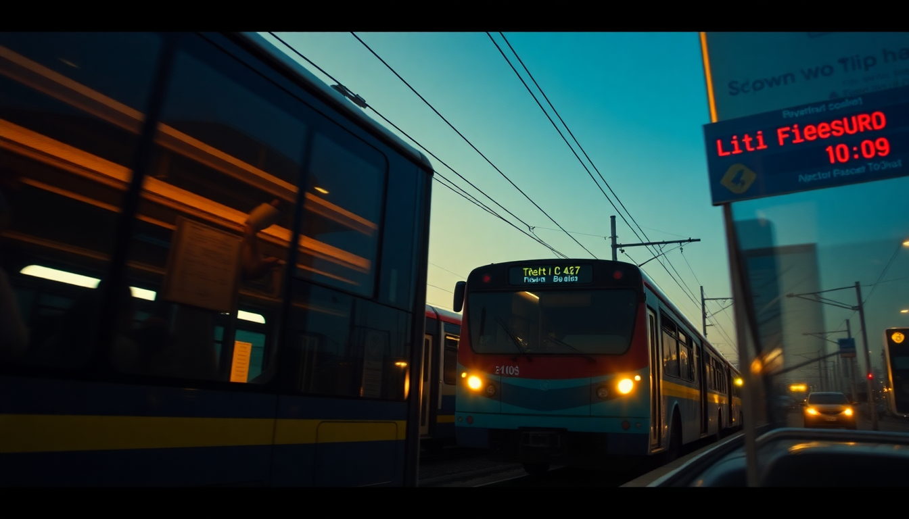

Getting Around Thailand: Trains, Buses and Flights

I just spent three weeks bouncing between Bangkok, Chiang Mai, and Phuket, and the hardest part wasn’t the heat or the language — it was figuring out which mode of transport actually made sense for each leg. Trains are slow but charming. Buses are cheap and surprisingly comfortable. Flights save time but cost you in airport transfers. Here’s what I learned, route by route.
Should I take the overnight train from Bangkok to Chiang Mai?
Yes, if you’re not in a rush and want to skip a night of accommodation. I booked a first-class sleeper on the Special Express No. 9 from Hua Lamphong Station (Bangkok’s old central station, though most long-distance trains now run from Krung Thep Aphiwat Central Terminal). The ride takes about 12 hours, and the berths convert into proper beds with curtains. I slept better than I expected — the rocking motion is oddly soothing.
- Book first-class sleeper for a private two-berth cabin with AC and a sink.
- Second-class sleeper is fine too, but you share an open carriage with curtains. Cheaper by about 400 THB.
- Bring a light jacket — the AC is aggressive.
- The onboard dining car serves decent pad thai and beer, but I’d grab a Khao Man Gai from a station vendor before boarding.
The downside? Delays are common. My train arrived 90 minutes late into Chiang Mai Station. If you have a tight connection, don’t do this.
Is the bus from Chiang Mai to Phuket a good idea?
Hard no. I looked into this because I’m cheap, but it’s 22 hours straight, and the bus companies — even the reputable ones like Sombat Tour or Nakhonchai Air — run through winding mountain roads and then down the coast. I took a bus from Chiang Mai Arcade Bus Terminal to Bangkok’s Mo Chit Terminal once (about 10 hours), and that was enough. The seats recline well, and they hand out snacks and water, but the toilet stops are grim.
- Chiang Mai to Bangkok by bus: 10 hours, 600-800 THB. Comfortable for the price.
- Chiang Mai to Phuket by bus: 22 hours, 1,200-1,500 THB. I’d rather fly.
- Bangkok to Phuket by bus: 14 hours. Only if you’re on a shoestring budget and have a strong bladder.
If you must do a long bus ride, choose Nakhonchai Air for their VIP 24-seat coaches with more legroom.
Which domestic airlines are reliable in Thailand?
I flew from Chiang Mai International Airport to Phuket International Airport on AirAsia — 1 hour 45 minutes, 1,800 THB with a checked bag. No frills, but on time and clean. Nok Air and Bangkok Airways are the other main players. Bangkok Airways is pricier but includes lounge access and a meal; I flew them from Bangkok’s Suvarnabhumi Airport to Phuket once and got a real sandwich, which felt luxurious.
- AirAsia: Cheapest, no free snacks, strict 7 kg carry-on limit. Book early for 1,200 THB fares.
- Nok Air: Slightly better legroom, fun yellow planes. Good for Bangkok-Phuket.
- Bangkok Airways: “Boutique” airline. Free lounge at Suvarnabhumi, hot meal, and 20 kg checked bag included. Worth it if you find a fare under 2,500 THB.
- Thai Lion Air: Ultra-budget. Fine, but I’ve had two delays with them.
Pro tip: Don’t book a flight that lands in Phuket after 8 PM unless you’ve pre-booked a transfer. Taxis from the airport to Patong cost 800-1,000 THB fixed, and the Grab app is often double that.
How do I get from Phuket Airport to my hotel?
Phuket’s airport is on the northwest coast, and most hotels are in Patong, Kata, Karon, or Rawai. The official airport bus (Airport Bus Phuket) runs from the terminal to Phuket Town for 100 THB, but that drops you in town, not at the beach. I took a shared minivan from the Transport Co-Op counter near baggage claim — 200 THB to Patong, but they wait until the van is full. Took 45 minutes.
- Private taxi: 800-1,000 THB to Patong. 1,200 THB to Rawai. Fixed price booths inside arrivals.
- Grab: 900-1,300 THB depending on surge. Works, but slower than the taxi queue.
- Rent a scooter: I don’t recommend this from the airport. The traffic on the Thepkrasattri Road is insane. Rent from a shop near your hotel instead.
I stayed at The Marina Phuket Hotel in Patong, and the taxi dropped me right at the door. Easy.
Should I take the train from Bangkok to Phuket?
You can’t. There is no direct train to Phuket. The railway ends at Surat Thani Station, and from there you take a bus or taxi to the ferry pier (2 hours) and then a 2-hour ferry to Phuket. I did this once out of curiosity, and it’s a full-day affair.
- Bangkok to Surat Thani by train: Overnight sleeper, 8-10 hours, 800-1,200 THB.
- Surat Thani to Donsak Pier by bus: 1.5 hours, included in combo tickets.
- Ferry to Phuket: 2 hours, 400-600 THB. The Raja Ferry is the main operator.
Unless you’re a train enthusiast, just fly. The combo ticket is cheaper (around 1,500 THB total) but you lose a whole day.
What’s the best way to get around Bangkok itself?
Bangkok’s traffic is legendary for all the wrong reasons. I avoided taxis and tuk-tuks unless it was 10 PM or later. The BTS Skytrain and MRT are your friends. I used the BTS from Siam to Mo Chit for the Chatuchak Weekend Market — 44 THB, 20 minutes. A taxi would have been an hour and 200 THB.
- BTS Skytrain: Covers Sukhumvit, Silom, and Siam. Buy a Rabbit card if you’re staying 3+ days.
- MRT: Goes to Chinatown (Wat Mangkon station), Hua Lamphong, and Sukhumvit. Single tickets are cheap, but the MRT doesn’t connect directly to the BTS — you have to exit and re-enter.
- Grab Bike: For short distances (<3 km). 30-60 THB. Faster than any car.
- Chao Phraya Express Boat: 15-60 THB. I took the orange-flag boat from Sathorn Pier to Tha Tien (for Wat Pho). Breezy and scenic.
Avoid tuk-tuks unless you want a 300 THB ride that should cost 80 THB. They’re fun once, then you realize you’ve been had.
FAQ
Is it safe to take overnight trains in Thailand as a solo traveler? Yes, I felt safe. The first-class sleeper has a locking door, and staff walk through the carriages regularly. Keep your phone and wallet in a money belt under your clothes while sleeping. The second-class sleeper is more exposed, but I’ve done it twice without issue. Just don’t leave valuables on the seat while you’re in the dining car.
Can I book train and bus tickets online in advance? For trains, use the official State Railway of Thailand (SRT) website or app, but be warned — the interface is clunky and often rejects foreign credit cards. I used 12Go.asia instead; it adds a small markup but takes PayPal and gives instant e-tickets. For buses, BusOnlineTicket.co.th works well. For flights, book directly on AirAsia or Nok Air’s sites.
How much luggage can I take on domestic flights? AirAsia and Nok Air allow 7 kg carry-on (one bag only) and charge for checked luggage. Bangkok Airways includes 20 kg checked. I flew AirAsia from Chiang Mai to Phuket with a 15 kg checked bag for an extra 400 THB. Weigh your bag at the airport kiosk before queuing — the gate staff will make you pay 1,000 THB if it’s over.
Conclusion
- Bangkok to Chiang Mai: Overnight train (first-class sleeper) for the experience. Fly if you’re short on time.
- Chiang Mai to Phuket: Fly. The bus is too long.
- Bangkok to Phuket: Fly. The train + ferry combo is only for die-hard railway fans.
- Within Bangkok: BTS and MRT for everything. Grab Bike for short hops.
- Phuket Airport to hotel: Pre-book a private taxi or use the shared minivan. Skip the public bus unless your hotel is in Phuket Town.